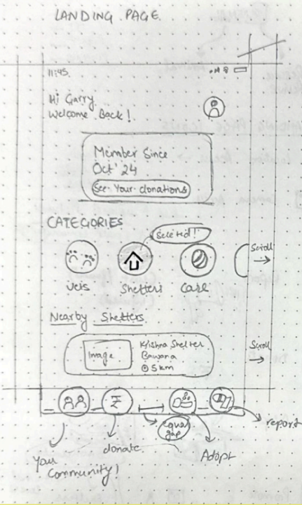
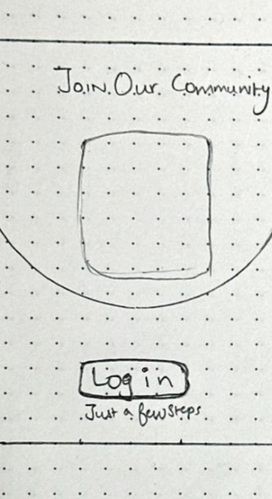
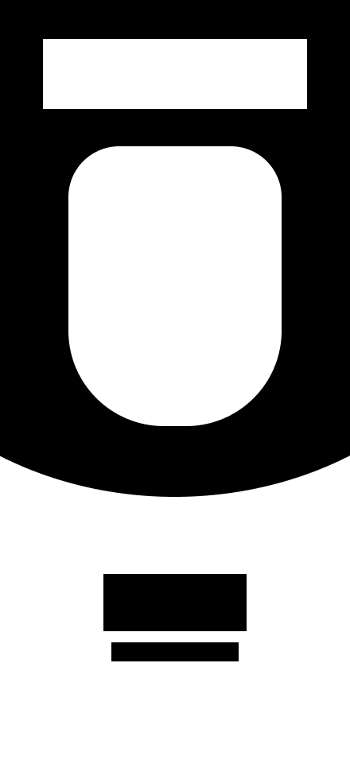
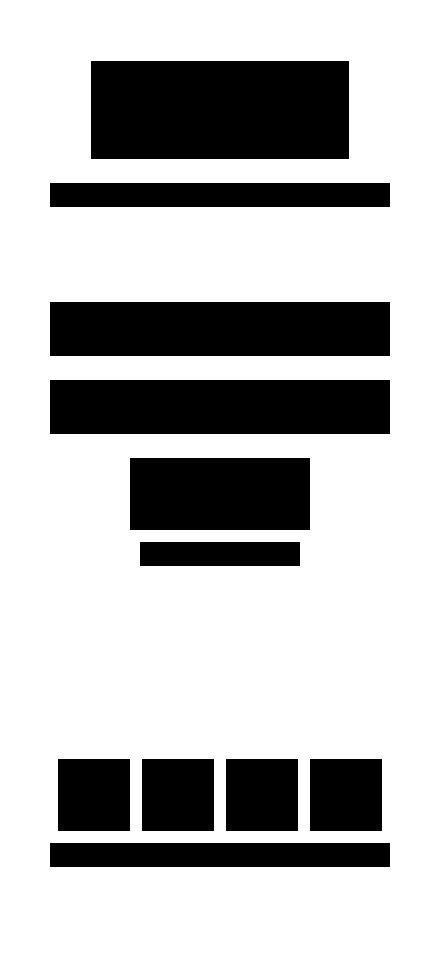
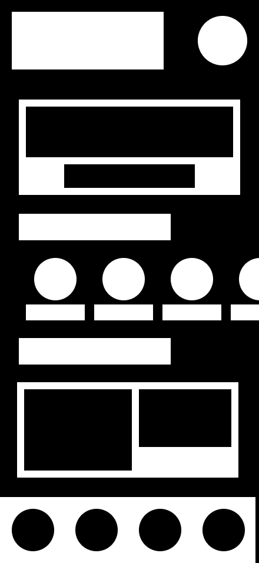
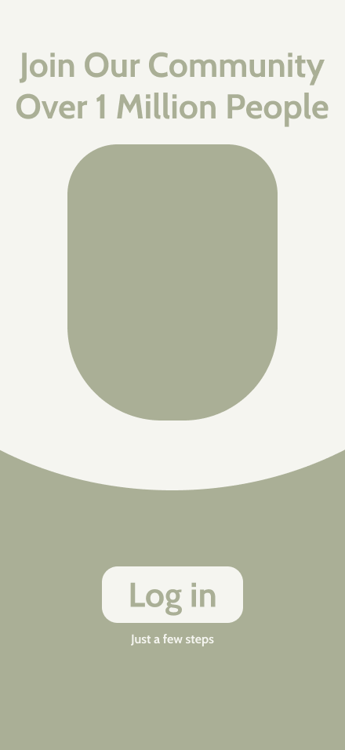
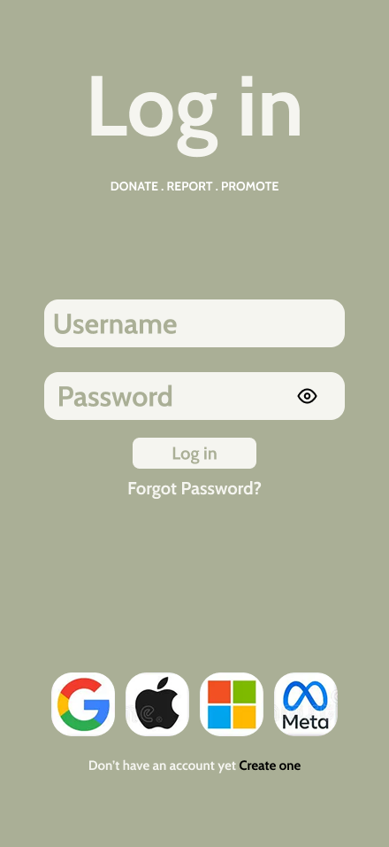
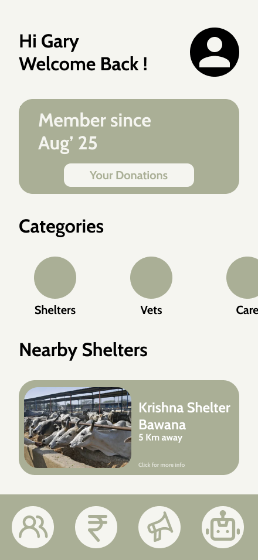
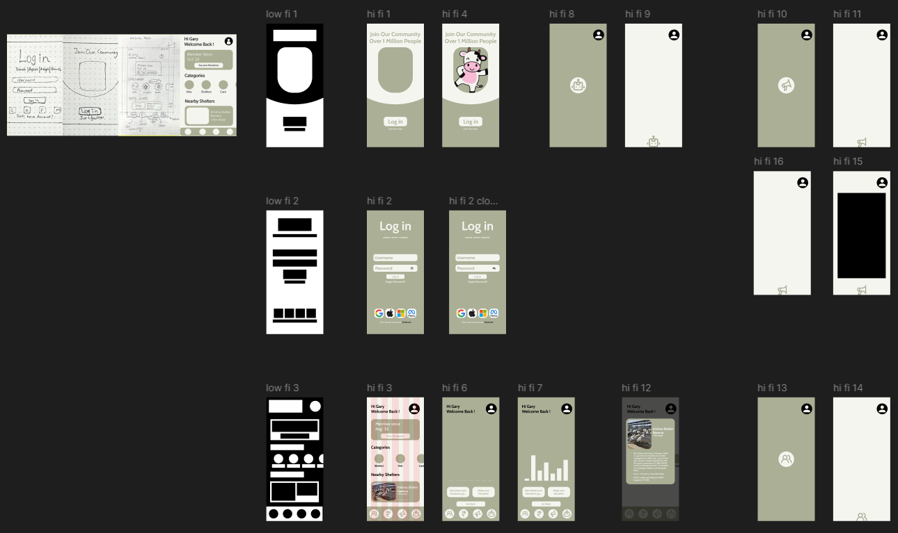
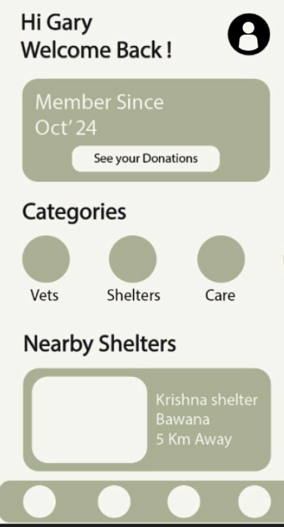

Prototype
Design Evolution
From rough sketches to polished interfaces — a journey of iteration, feedback, and refinement. All design work by Girikshit Kumar.
1
Rough Sketches

Initial ideas for the SOS button and home screen layout

Mapping the user flow for reporting and donation
2
Low-Fidelity Wireframes



Initial digital mockups with basic navigation structure
3
High-Fidelity Screens



Key screens: Onboarding, Login, and Dashboard

Complete screen collection — all 16 hi-fi screens showing the full app flow
✦
Before & After

Early Version: Initial digital mockup with basic navigation

Final Interface: Polished design with clearer calls-to-action